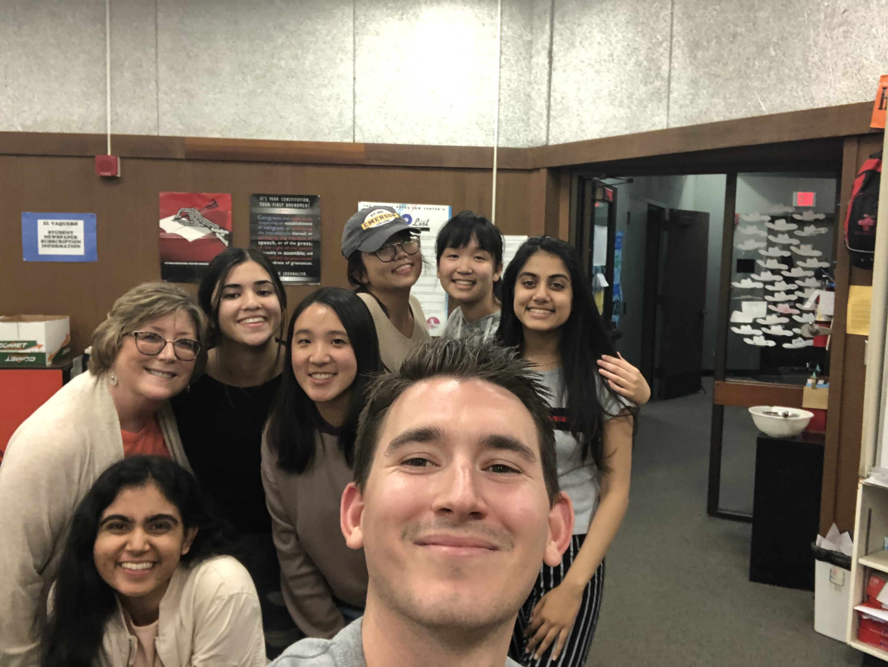
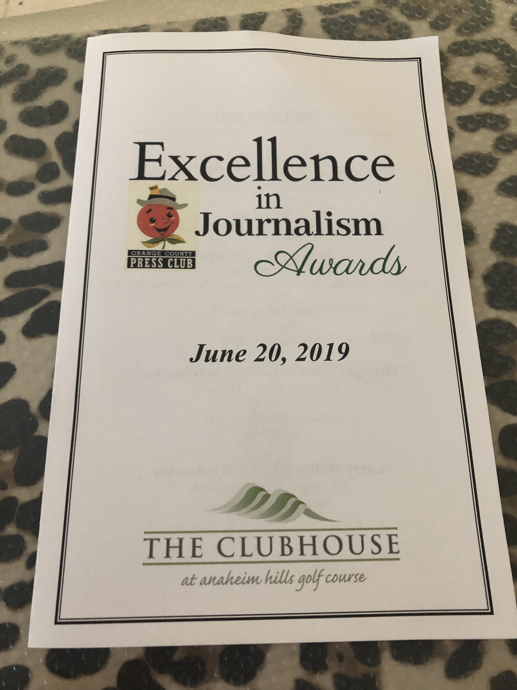
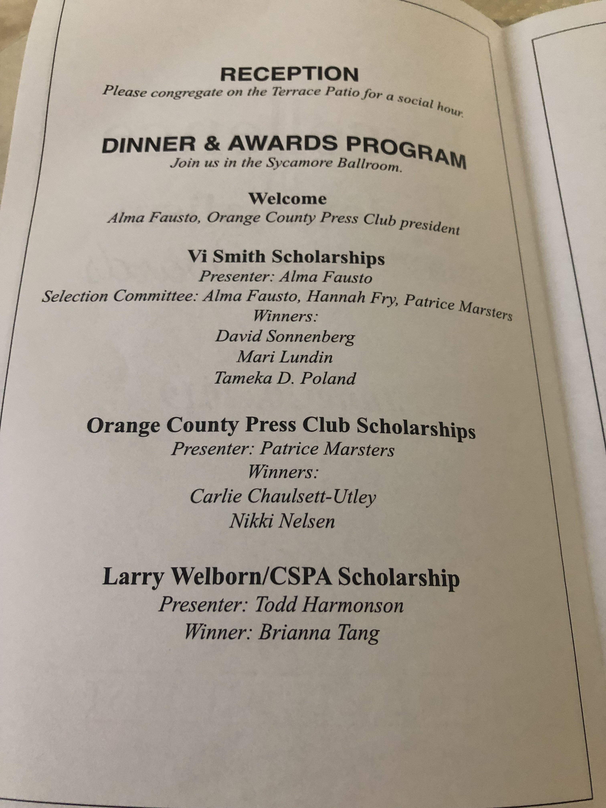
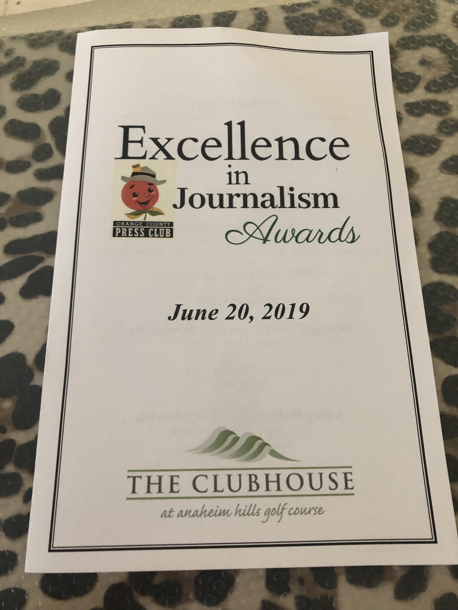
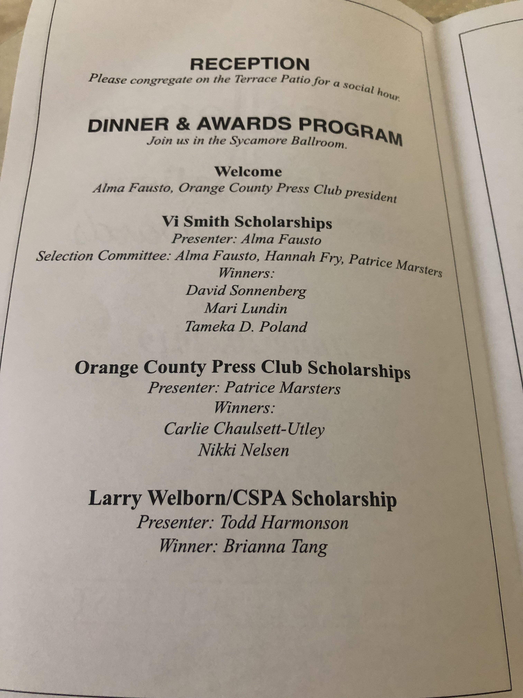

El Vaquero is my high school's student publication. In my Freshman year, I wanted to improve my writing and decided to take our introductory course beginning journalism. After completing the course, I found it very interesting and decided to apply to be on my school’s newspaper as a staff writer during my sophomore year. In addition, I am also a subscriptions team manager which makes sure that the newspapers are sent out to our subscribers each month. Towards the end of my sophomore year, I decided to take on a bigger challenge and applied to be a page editor intern and luckily got in. Entering my junior year, I am also a managing and page editor.

This picture was taken in
I received my letter that I will be
I was then invited to the annual
At the banquet, I received a
our journalism room on our our page and managing editor ocpress club banquet. scholarship which help journalists
last mandatory day of the year. next year. in the orange county area
our journalism room on our our page and managing editor ocpress club banquet. scholarship which help journalists
last mandatory day of the year. next year. in the orange county area
 


